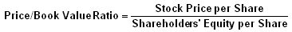
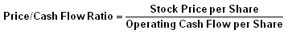
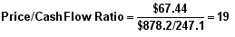
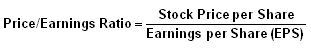
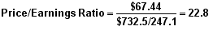
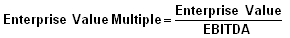

This last section of the ratio analysis tutorial looks at a wide array of ratios that can be used by investors to estimate the attractiveness of a potential or existing investment and get an idea of its valuation.
However, when looking at the financial statements of a company many users can suffer from information overload as there are so many different financial values. This includes revenue, gross margin, operating cash flow, EBITDA, pro forma earnings and the list goes on. Investment valuation ratios attempt to simplify this evaluation process by comparing relevant data that help users gain an estimate of valuation.
For example, the most well-known investment valuation ratio is the P/E ratio, which compares the current price of company's shares to the amount of earnings it generates. The purpose of this ratio is to give users a quick idea of how much they are paying for each $1 of earnings. And with one simplified ratio, you can easily compare the P/E ratio of one company to its competition and to the market.
The first part of this tutorial gives a great overview of "per share" data and the major considerations that one should be aware of when using these ratios. The rest of this section covers the various valuation tools that can help you determine if that stock you are interested in is looking under or overvalued.
To find the data used in the examples in this section, please see the Securities and Exchange Commission's website to view the 2005 Annual Statement of Zimmer Holdings.
Before discussing valuation ratios, it's worthwhile to briefly review some concepts that are integral to the interpretation and calculation of the most commonly used per share indicators.
Per-share data can involve any number of items in a company's financial position. In corporate financial reporting - such as the annual report, Forms 10-K and 10-Q (annual and quarterly reports, respectively, to the SEC) - most per-share data can be found in these statements, including earnings and dividends.
Additional per-share items (which are often reported by investment research services) also include sales (revenue), earnings growth and cash flow. To calculate sales, earnings and cash flow per share, a weighted average of the number of shares outstanding is used. For book value per share, the fiscal yearend number of shares is used. Investors can rely on companies and investment research services to report earnings per share on this basis.
In the case of earnings per share, a distinction is made between basic and diluted income per share. In the case of the latter, companies with outstanding warrants, stock options, and convertible preferred shares and bonds would report diluted earnings per share in addition to their basic earnings per share.
The concept behind this treatment is that if converted to common shares, all these convertible securities would increase a company's shares outstanding. While it is unlikely for any or all of these items to be exchanged for common stock in their entirety at the same time, conservative accounting conventions dictate that this potential dilution (an increase in a company's shares outstanding) be reported. Therefore, earnings per share come in two varieties - basic and diluted (also referred to as fully diluted).
An investor should carefully consider the diluted share amount if it differs significantly from the basic share amount. A company's share price could suffer if a large number of the option holders of its convertible securities decide to switch to stock.
For example, let's say that XYZ Corp. currently has one million shares outstanding, one million in convertible options outstanding (assumes each option gives the right to buy one share), and the company's earnings per share are $3. If all the options were exercised (converted), there would be two million shares outstanding. In this extreme example, XYZ's earnings per share would drop from $3 to $1.50 and its share place would plummet.
While it is not very common, when companies sell off and/or shut down a component of their operations, their earnings per share (both basic and diluted) will be reported with an additional qualification, which is presented as being based on continuing and discontinued operations.
The absolute dollar amounts for earnings, sales, cash flow and book value are worthwhile for investors to review on a year-to-year basis. However, in order for this data to be used in calculating investment valuations, these dollar amounts must be converted to a per-share basis and compared to a stock's current price. It is this comparison that gives rise to the common use of the expression "multiple" when referring to the relationship of a company's stock price (per share) to its per-share metrics of earnings, sales, cash flow and book value. These so-called valuation ratios provide investors with an estimation, albeit a simplistic one, of whether a stock price is too high, reasonable, or a bargain as an investment opportunity.
Lastly, it is very important to once again to remind investors that while some financial ratios have general rules (or a broad application), in most instances it is a prudent practice to look at a company's historical performance and use peer company/industry comparisons to put any given company's ratio in perspective. This is particularly true of investment valuation ratios. This paragraph, therefore, should be considered as an integral part of the discussion of each of the following ratios.
A valuation ratio used by investors which compares a stock's per-share price (market value) to its book value (shareholders' equity). The price-to-book value ratio, expressed as a multiple (i.e. how many times a company's stock is trading per share compared to the company's book value per share), is an indication of how much shareholders are paying for the net assets of a company.
The book value of a company is the value of a company's assets expressed on the balance sheet. It is the difference between the balance sheet assets and balance sheet liabilities and is an estimation of the value if it were to be liquidated.
The price/book value ratio, often expressed simply as "price-to-book", provides investors a way to compare the market value, or what they are paying for each share, to a conservative measure of the value of the firm.
Formula:

Components:
The dollar amount in the numerator, $67.44, is the closing stock price for Zimmer Holdings as of December 30, 2005, as reported in the financial press or over the Internet in online quotes. In the denominator, the book value per share is calculated by dividing the reported shareholders' equity (balance sheet) by the number of common shares outstanding (balance sheet) to obtain the $18.90 book value per-share figure. By simply dividing, the equation gives us the price/book value ratio indicating that, as of Zimmer Holdings' 2005 fiscal yearend, its stock was trading at 3.6-times the company's book value of $18.90 per share.
Variations:
A conservative alternative to using a company's reported shareholders' equity (book value) figure would be to deduct a company's intangible assets from its reported shareholders' equity to arrive at a tangible shareholders' equity (tangible book value) amount. For example, Zimmer Holdings' FY 2005 balance sheet reports goodwill (in millions $) of $2,428.8 and net intangible assets of $756.6, which total $3,185.4. If we deduct these intangible assets from its shareholders' equity of $4,682.8 of the same date, Zimmer Holdings is left with a significantly reduced tangible shareholders' equity of $1,497.4. Factoring this amount into our equation, the company has a book value per share of only $6.04, and the price/book value ratio then skyrockets to 11.2 times.
Commentary:
If a company's stock price (market value) is lower than its book value, it can indicate one of two possibilities. The first scenario is that the stock is being unfairly or incorrectly undervalued by investors because of some transitory circumstance and represents an attractive buying opportunity at a bargain price. That's the way value investors think. It is assumed that the company's positive fundamentals are still in place and will eventually lift it to a much higher price level.
On the other hand, if the market's low opinion and valuation of the company are correct (the way growth investors think), at least over the foreseeable future, as a stock investment, it will be perceived at its worst as a losing proposition and at its best as being a stagnant investment.
Some analysts feel that because a company's assets are recorded at historical cost that its book value is of limited use. Outside the
Also, intellectual property, particularly as we progress at a fast pace into the so-called "information age", is difficult to assess in terms of value. Book value may well grossly undervalue these kinds of assets, both tangible and intangible.
The P/B ratio therefore has its shortcomings but is still widely used as a valuation metric. It is probably more relevant for use by investors looking at capital-intensive or finance-related businesses, such as banks.
In terms of general usage, it appears that the price-to-earnings (P/E) ratio is firmly entrenched as the valuation of choice by the investment community. (Skip ahead to the P/E chapter here.)
The price/cash flow ratio is used by investors to evaluate the investment attractiveness, from a value standpoint, of a company's stock. This metric compares the stock's market price to the amount of cash flow the company generates on a per-share basis.
This ratio is similar to the price/earnings ratio, except that the price/cash flow ratio (P/CF) is seen by some as a more reliable basis than earnings per share to evaluate the acceptability, or lack thereof, of a stock's current pricing. The argument for using cash flow over earnings is that the former is not easily manipulated, while the same cannot be said for earnings, which, unlike cash flow, are affected by depreciation and other non-cash factors.
Formula:
Components:

The dollar amount in the numerator is the closing stock price for Zimmer Holdings as of December 30, 2005 as reported in the financial press or over the Internet in online quotes. In the denominator, the cash flow per share is calculated by dividing the reported net cash provided by operating activities (cash flow statement) by the weighted average number of common shares outstanding (income statement) to obtain the $3.55 cash flow per share figure. By simply dividing, the equation gives us the price/cash flow ratio that indicates as of Zimmer Holdings' 2005 fiscal yearend, its stock (at $67.44) was trading at 19.0-times the company's cash flow of $3.55 per share.
Variations:
Sometimes free cash flow is used instead of operating cash flow to calculate the cash flow per share figure.
Commentary:
Just as many financial professionals prefer to focus on a company's cash flow as opposed to its earnings as a profitability indicator, it's only logical that analysts in this camp presume that the price/cash flow ratio is a better investment valuation indicator than the P/E ratio.
Investors need to remind themselves that there are a number of non-cash charges in the income statement that lower reported earnings. Recognizing the primacy of cash flow over earnings leads some analysts to prefer using the P/CF ratio rather than, or in addition to, the company's P/E ratio.
Despite these considerations, there's no question that the P/E measurement is the most widely used and recognized valuation ratio.
The price/earnings ratio (P/E) is the best known of the investment valuation indicators. The P/E ratio has its imperfections, but it is nevertheless the most widely reported and used valuation by investment professionals and the investing public. The financial reporting of both companies and investment research services use a basic earnings per share (EPS) figure divided into the current stock price to calculate the P/E multiple (i.e. how many times a stock is trading (its price) per each dollar of EPS).
It's not surprising that estimated EPS figures are often very optimistic during bull markets, while reflecting pessimism during bear markets. Also, as a matter of historical record, it's no secret that the accuracy of stock analyst earnings estimates should be looked at skeptically by investors. Nevertheless, analyst estimates and opinions based on forward-looking projections of a company's earnings do play a role in Wall Street's stock-pricing considerations.
Historically, the average P/E ratio for the broad market has been around 15, although it can fluctuate significantly depending on economic and market conditions. The ratio will also vary widely among different companies and industries.
Formula:
Components:
The dollar amount in the numerator is the closing stock price for Zimmer Holdings as of December 31, 2005 as reported in the financial press or over the Internet in online quotes. In the denominator, the EPS figure is calculated by dividing the company's reported net earnings (income statement) by the weighted average number of common shares outstanding (income statement) to obtain the $2.96 EPS figure. By simply dividing, the equation gives us the P/E ratio that indicates (as of Zimmer Holdings' 2005 fiscal yearend) its stock (at $67.44) was trading at 22.8-times the company's basic net earnings of $2.96 per share. This means that investors would be paying $22.80 for every dollar of Zimmer Holdings' earnings.
Variations:
The basic formula for calculating the P/E ratio is fairly standard. There is never a problem with the numerator - an investor can obtain a current closing stock price from various sources, and they'll all generate the same dollar figure, which, of course, is a per-share number.
However, there are a number of variations in the numbers used for the EPS figure in the denominator. The most commonly used EPS dollar figures include the following:
The growth investor views high P/E ratio stocks as attractive buys and low P/E stocks as flawed, unattractive prospects. Value investors are not inclined to buy growth stocks at what they consider to be overpriced values, preferring instead to buy what they see as underappreciated and undervalued stocks, at a bargain price, which, over time, will hopefully perform well.
Note: Though this indicator gets a lot of investor attention, there is an important problem that arises with this valuation indicator and investors should avoid basing an investment decision solely on this measure. The ratio's denominator (earnings per share) is based on accounting conventions related to a determination of earnings that is susceptible to assumptions, interpretations and management manipulation. This means that the quality of the P/E ratio is only as good as the quality of the underlying earnings number.
Whatever the limitations of the P/E ratio, the investment community makes extensive use of this valuation metric. It will appear in most stock quote presentations on an updated basis, i.e., the latest 12-months earnings (based on the most recent reported quarter) divided by the current stock price. Investors considering a stock purchase should then compare this current P/E ratio against the stock's long-term (three to five years) historical record. This information is readily available in Value Line or S&P stock reports, as well as from most financial websites, such as Yahoo!Finance and MarketWatch.
It's also worthwhile to look at the current P/E ratio for the overall market (S&P 500), the company's industry segment, and two or three direct competitor companies. This comparative exercise can help investors evaluate the P/E of their prospective stock purchase as being in a high, low or moderate price range.
To learn more, check out Understanding The P/E Ratio,Analyze Investments Quickly With Ratios and Move Over P/E, Make Way For The PEG.
The price/earnings to growth ratio, commonly referred to as the PEG ratio, is obviously closely related to the P/E ratio. The PEG ratio is a refinement of the P/E ratio and factors in a stock's estimated earnings growth into its current valuation. By comparing a stock's P/E ratio with its projected, or estimated, earnings per share (EPS) growth, investors are given insight into the degree of overpricing or underpricing of a stock's current valuation, as indicated by the traditional P/E ratio.
The general consensus is that if the PEG ratio indicates a value of 1, this means that the market is correctly valuing (the current P/E ratio) a stock in accordance with the stock's current estimated earnings per share growth. If the PEG ratio is less than 1, this means that EPS growth is potentially able to surpass the market's current valuation. In other words, the stock's price is being undervalued. On the other hand, stocks with high PEG ratios can indicate just the opposite - that the stock is currently overvalued.
Formula:
Components:
For the numerator, we are using Zimmer Holdings' P/E ratio, as calculated in the last chapter, for its fiscal yearend, December 30, 2005. The denominator, estimated earnings per share growth in 2006, is based on data found in a Value Line stock report on Zimmer Holdings.
Variations:
None
Commentary:
While the P/E ratio represents a very simple and widely used method of valuing a stock, it does lack one very important variable. The assumption with high P/E stocks (generally of the growth variety) is that investors are willing to buy at a high price because they believe that the stock has significant growth potential. The PEG ratio helps investors determine the degree of reliability of that growth assumption.
Although the PEG ratio improves upon (i.e. provides additional valuation insight) the P/E ratio, it is still far from perfect. The problem lies with the numerator and the denominator in the equation. Misreading of a company's and/or analysts' predictions of future earnings are very common. Also, investor sentiment regarding a stock's pricing and earnings prospects is usually overly optimistic during bull markets and overly pessimistic in bear markets.
The question of where investors can source the data necessary to calculate the PEG ratio focuses entirely on the estimated future growth of per-share earnings. A stock's P/E ratio appears in virtually all price quotes regardless of their origin. Estimated earnings growth shows up in investment research reports and financial analysts' comments in the financial press but may require some digging to find it.
In this regard, the historical and estimated performance of a company's earnings per share is easily obtained from Value Line stock reports, which are available by subscription to the Value Line Investment Survey. It should also be noted that most public libraries carry a Value Line subscription, which, therefore, makes its stock reports available free of charge to the general public.
Using Zimmer Holdings as an illustration, let's take a look at the data in question in a December 1, 2006 Value Line stock report on the company. At the top of the report, Value Line reports a trailing P/E ratio of 22.6. Zimmer Holdings went public in 2001, so we have five years of actual EPS, as well as Value Line's one, two, and three-to-five year EPS estimates in the per share data box.
Value Line estimates a +11% EPS growth for the 2005-2006 period and +14% growth rate for 2007. So, at yearend 2006 we are looking at a PEG ratio for Zimmer of 1.61 (22.6 P/E ratio ÷ 14% EPS growth). Some peer company PEG ratio comparisons would give investors an idea of the strength or weakness of this valuation indicator at that point in time.
To learn more, check out Understanding The P/E Ratio,Analyze Investments Quickly With Ratios and Move Over P/E, Make Way For The PEG.
A stock's price/sales ratio (P/S ratio) is another stock valuation indicator similar to the P/E ratio. The P/S ratio measures the price of a company's stock against its annual sales, instead of earnings.
Like the P/E ratio, the P/S reflects how many times investors are paying for every dollar of a company's sales. Since earnings are subject, to one degree or another, to accounting estimates and management manipulation, many investors consider a company's sales (revenue) figure a more reliable ratio component in calculating a stock's price multiple than the earnings figure.
Formula:
Components:
The dollar amount in the numerator is the closing stock price for Zimmer Holdings as of December 31, 2005, as reported in the financial press or over the internet in online quotes. In the denominator, the sales per share figure is calculated by dividing the reported net earnings (income statement) by the weighted average number of common shares outstanding (income statement) to obtain the $13.30 sales per share figure. By simply dividing, the equation gives us a P/S ratio indicating that, as of Zimmer Holdings 2005 fiscal yearend, its stock (at $67.44) was trading at 5.1-times the company's sales of $13.30 per share. This means that investors would be paying $5.10 for every dollar of Zimmer Holdings' sales.
Variations:
None
Commentary:
"The king of the value factors" is how James O'Shaughnessy describes the P/S ratio in his seminal book on investing strategies, What Works on Wall Street (McGraw-Hill, 1997). Using Standard & Poor's CompuStat database, his exhaustive analysis makes clear that "the stock market methodically rewards certain investment strategies while punishing others." No matter what your style of investing, O'Shaughnessy's research concludes that "low price-to-sales ratios beat the market more than any other value ratio, and do so more consistently."
As powerful a valuation metric as the P/S ratio may be, it would be a mistake for investors to put all their stock price valuation eggs in one basket. However, the P/S ratio does provide another perspective that complements the other valuation indicators - particularly the P/E ratio - and is a worthwhile addition to an investor's stock analysis toolbox.
A stock's dividend yield is expressed as an annual percentage and is calculated as the company's annual cash dividend per share divided by the current price of the stock. The dividend yield is found in the stock quotes of dividend-paying companies. Investors should note that stock quotes record the per share dollar amount of a company's latest quarterly declared dividend. This quarterly dollar amount is annualized and compared to the current stock price to generate the per annum dividend yield, which represents an expected return.
Income investors value a dividend-paying stock, while growth investors have little interest in dividends, preferring to capture large capital gains. Whatever your investing style, it is a matter of historical record that dividend-paying stocks have performed better than non-paying-dividend stocks over the long term.
Formula:
Components:
Zimmer Holdings does not pay a dividend, so the $1.00 dividend per share amount is being used for illustration purposes. In the company's stock quote the latest quarterly dividend would be recorded as $0.25 (per share) and the share price as $67.44 as of yearend 2005. On this basis, the stock would have a dividend yield of 1.48%.
Variations:
None
Commentary:
A stock's dividend yield depends on the nature of a company's business, its posture in the marketplace (value or growth oriented), its earnings and cash flow, and its dividend policy. For example, steady, mature businesses, such as utilities and banks, are generally good dividend payers. REIT stocks, with their relatively stable inflow of rental payments, are also recognized for their attractive dividend yields. If you're an income investor, a stock's dividend yield might well be the only valuation measurement that matters to you. On the other hand, if you're in the growth stock camp, dividend yield (or the lack of one) will be meaningless.
This valuation metric is calculated by dividing a company's "enterprise value" by its earnings before interest expense, taxes, depreciation and amortization (EBITDA).
Overall, this measurement allows investors to assess a company on the same basis as that of an acquirer. As a rough calculation, enterprise value multiple serves as a proxy for how long it would take for an acquisition to earn enough to pay off its costs (assuming no change in EBITDA).
Formula: 
Components:
| Market Capitalization
($67.44 x 247.8 MM) | $16,712 |
| -- | -- |
| Debt | 82 |
| Minority Interest | 2 |
| -- | $16,796 |
| Less Cash/Cash Equivalents | (233) |
| Enterprise Value | $16,563 |
Enterprise
Variations:
None
Commentary:
On the other hand, a company's enterprise value, which is the metric used by the acquiring party in an acquisition, is a term used by financial analysts to arrive at a value of a company viewed as a going concern rather than market capitalization. For example, in simple terms, long-term debt and cash in a company's balance sheet are important factors in arriving at enterprise value - both effectively serve to enhance company's value for the acquiring company.
As mentioned previously, enterprise value considerations seldom find their way into standard stock analysis reporting. However, it is true that by using enterprise value, instead of market capitalization, to look at the book or market-cap value of a company, investors can get a sense of whether or not a company is undervalued.
For more information on acquisitions, see The Basics Of Mergers And Acquisitions, Mergers And Acquisitions - Another Tool For Traders and The Wacky World of M&As.
Click here to return to the Financial Ratio Tutorial main menu.
{kind=link}
{kind=link}
{kind=link}
{kind=link}
{kind=link}
{kind=link}
{kind=link}
{kind=link}
{kind=link}
{kind=link}
{kind=link}
{kind=link}
{kind=link}
{kind=link}